Every role, by year.
Hover a year on the timeline for the name, click to read the full detail of that role.
Woods at Sasan: website, performance, content and press
I own marketing and growth for the property end to end. Four areas, in the order I took them on.
I replaced a weak, outdated site that had no visible call to action with a CMS-based website that reflects the property's philosophy and points every visitor to one action: Book now.
- Benchmarked Indian hotels, a direct competitor and Michelin Key hotels worldwide to decide which pages the site needed.
- Briefed and led two freelance designers from first brief to launch.
- Built on Framer, and connected the booking engine, analytics, tag manager, Meta Pixel and WhatsApp single-handedly.
- Treated launch as the start of the work, not the end of it. Constant redevelopment is part of a website launch: learning what works and what does not, and fine-tuning section by section.

Meta, YouTube and Google Ads ran in parallel, with lookalike audiences to reach new guests and remarketing to bring back visitors who had not booked. Meta and Google both performed as expected, and I kept refining the geographic targeting as the data came in.
- Channels
- Meta, YouTube and Google Ads, run together.
- Google Hotel Center
- Integration set up, connecting the property to Google hotel search.
- Audiences
- Lookalike and remarketing.
- Lead capture
- Direct to WhatsApp, which keeps every enquiry a real conversation.
- Booking engine
- Optimized the look and feel of the STAAH booking engine to shape the guest experience and turn visits into bookings.
- Handover
- Marketing answers the basic questions and passes the lead to sales. Typical response window: 12 hours. The handover is manual today.
Self-serve path
- Ad
- Website
- Book now
- Booking engine
- Booking
Enquiry-led path
- Ad
- Website
- Marketing filters
- Sales
- Booking
I designed the offers themselves, and drew each campaign plan from research on customer psychology: what a guest looks for, weighs up and decides on while browsing rooms. That research, together with my years in hospitality, is where the thinking starts.
Working with sales
A lead-tracking sheet, conversion tactics and retargeting for lost enquiries, worked out together with the sales team.
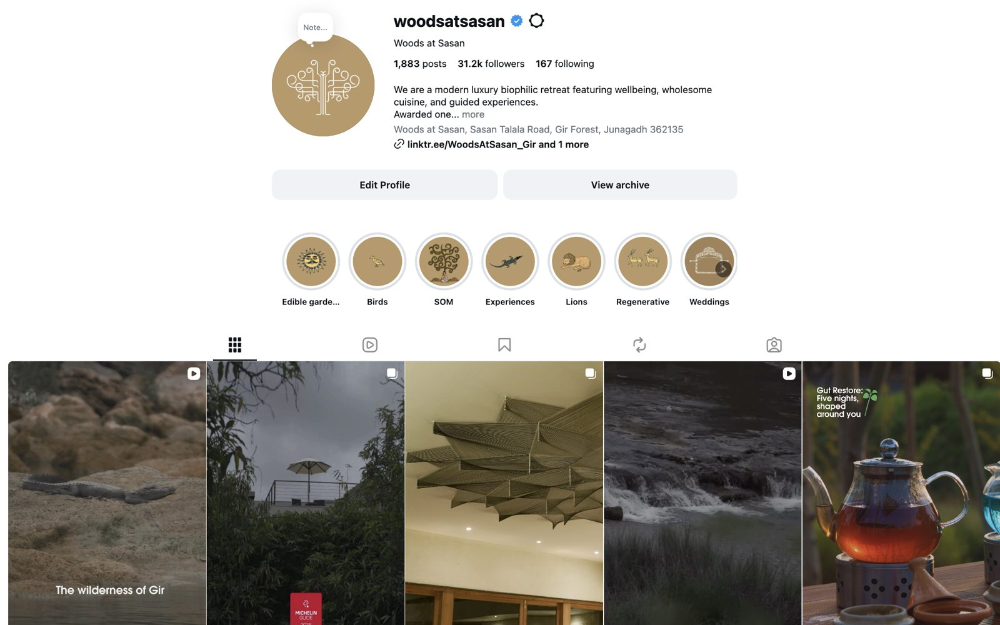
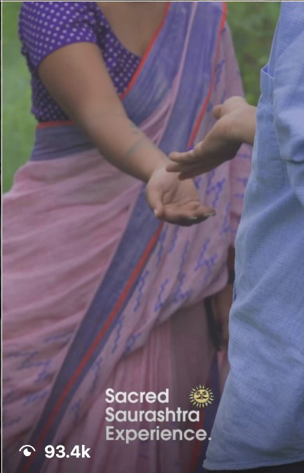
Seven articles, no PR agency
Four were paid placements in leading travel magazines. The rest came as organic coverage across other channels.
Collaborations from Mumbai and Gujarat
Built around monsoon stays and the cultural experiences of the region. The aim was brand awareness.
The announcement
I handle the press release and the internal communication, and keep all communication within the Guide's brand guidelines.
Performance, at global scale, without losing inclusion
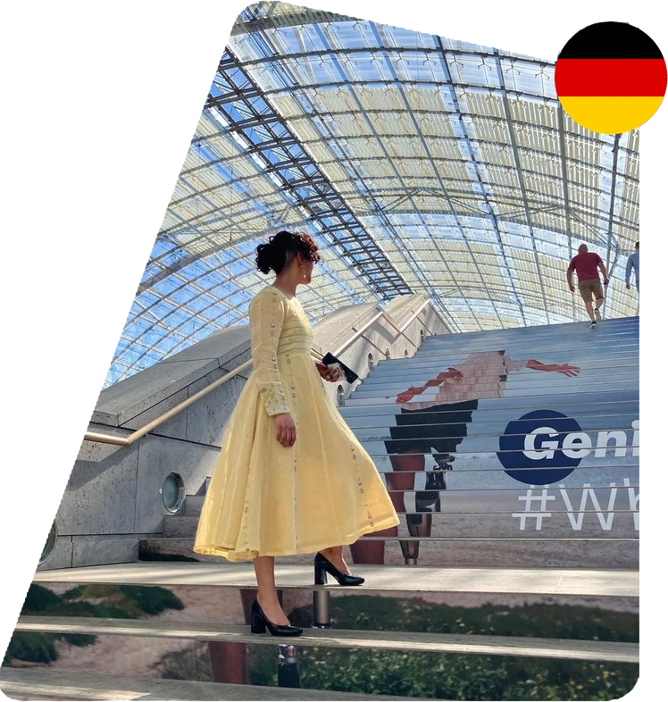
I was stationed in Berlin, Germany, working on Ottobock's global social presence, from the brand template to the performance numbers, and training the regional teams who carried it forward. Ottobock makes prosthetics and orthotics for people with disabilities, so inclusion is part of the product.
My main job was to design campaigns and templates that teams in every country could pick up, replicate and translate with ease. I owned performance-led brand campaigns and the content engine behind them, and the template was the foundation: designed once, then used across the company's global channels.
- Designed the global brand template for social and the campaign templates built on it, made to be replicated and translated.
- Used AI tools to speed up research and development, with a person reviewing every output.
- Set the content strategy, and ran community management and performance management day to day.
- Learned from teammates with lived experience of limb loss, which shaped how I built campaigns.
- Worked in Canva, CapCut, Adobe and Hootsuite.
40+ channels
The global brand template, adapted for more than forty channels.
50K milestone
I edited and conceptualized the video that marked it.
26 letters, A to Z
An illustrated alphabet explaining amputee and prosthetic terminology, made with an agency as a template for country teams to reuse and translate.
From the A to Z series
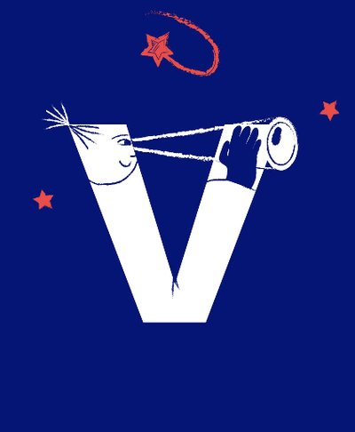
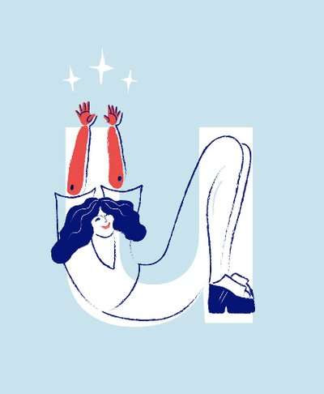
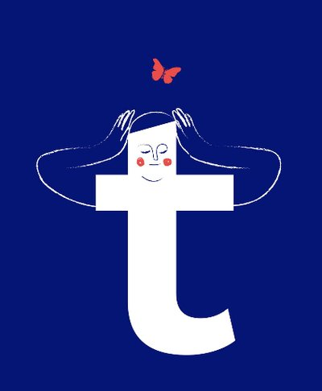
Three of the 26 letters, designed with an agency. The content belongs to Ottobock.
A global brand has to speak differently in different places. I led the adaptation of content for each market's geography and audience, and used the performance data to decide what to keep.
- Adapted assets geographically and demographically across global markets, which improved asset performance by 23%.
- Ran data-led optimization initiatives that lifted campaign efficiency by 11%.
- Scaled campaign engagement by 78% and consumer interactions by 31% through performance-led activation.
A template only works if the teams using it can use it. I built the internal capability to match, and standardized the tools and content workflows across teams.
- Trained Ottobock teams in other regions on Canva and Hootsuite.
- Taught the geographic and demographic adaptation of assets.
- Set out the process strategy, and the branding and design rules behind it.
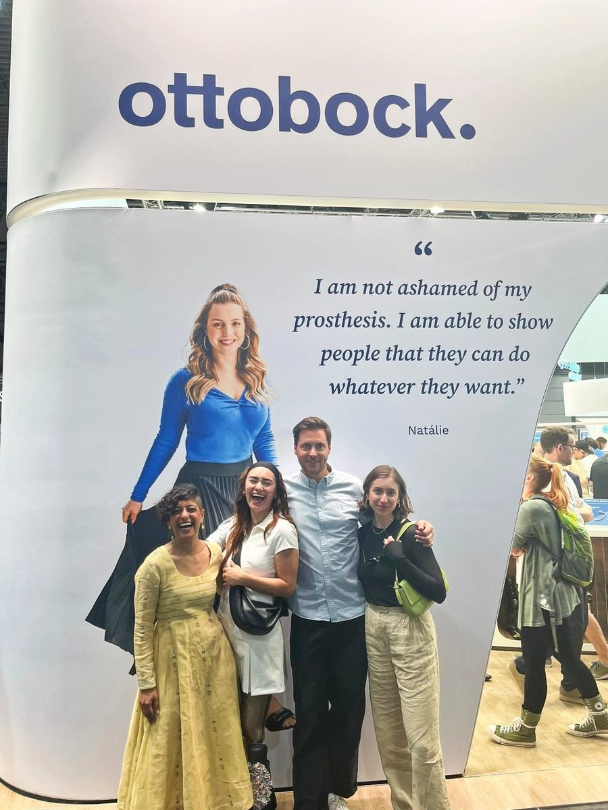
My master's thesis (MBA, International Marketing, with Design Thinking electives) looks at how WCAG guidelines, brand communication and profitability meet in healthcare organizations, with Ottobock as the case study. It establishes the need for a website, and a company, that is accessible and inclusive.
In short, it argues that accessibility is a responsibility, an expectation and a business advantage at once, and that a healthcare brand should build it into its identity from the start.
The thesis is built on internal company data and is confidential, so I cannot publish it or its findings. This is a brief description of its subject. I built this portfolio the same way I argue for: text first, operable by keyboard, with contrast checked against WCAG AA.
Frozen food for the kitchens that actually use it
Frozen food has found its way into kitchens with hungry kids, house parties and unplanned snack hours, and the air fryer made snacking at home feel guilt-free. The brand speaks to Gen Z and working women. My work began with understanding that product and the people who reach for it.
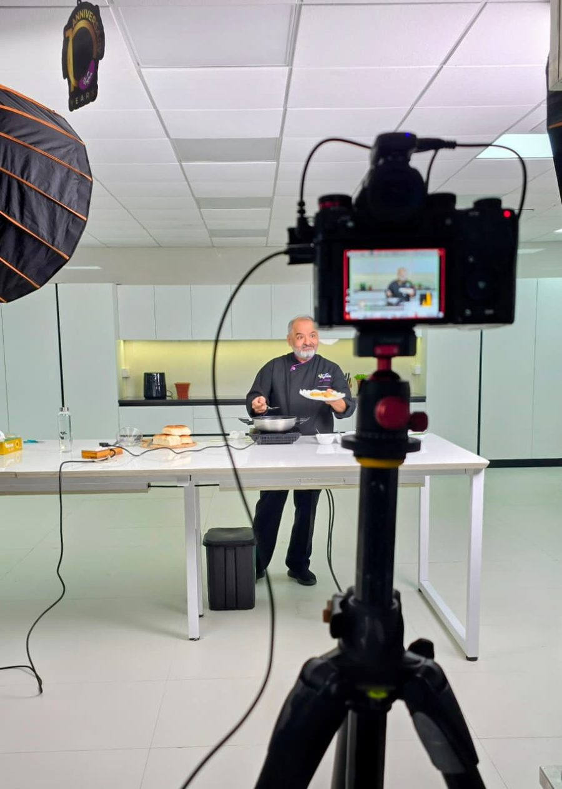
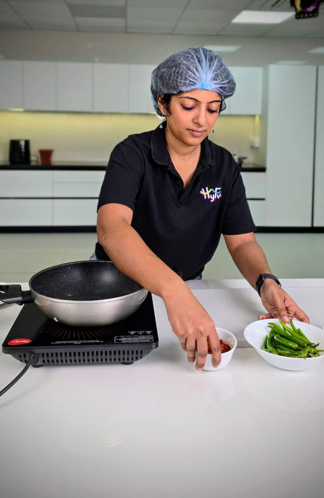
What I did
Category and positioning
Researched frozen food and found the occasions when people reach for it. I turned those occasions into product positioning, packaging narratives and communication strategy, to drive trial and repeat purchase.
Product innovation
Worked in liaison with product managers on consumer-led innovation, together with R&D, supply chain and agency partners, from the first insight through to market launch.
Integrated campaigns
Owned brand communication and campaign execution across channels, scaling reach to 160M+ impressions at a ₹5 CPM.
Performance marketing on Meta
Ran Meta campaigns to build brand awareness, with a Buy now link that takes shoppers directly into the brand catalog on quick-commerce (Qcomm) platforms.
Qcomm content and performance
Ran performance marketing for Qcomm platforms and, with a senior manager on the quick commerce team, developed A+ content: a visual language that explains the product and a relatively new category, and attracts new customers.
Community and creators
Built the community and creator strategy behind a steady 5.3% month-over-month audience growth and stronger adoption of the brand.
Better content for less
Used AI in content creation to bring production costs down, while commissioning high-quality food content from well-known production houses, including The Filter Copy.
People timed to launches
Worked with influencers and actors on campaigns, and timed each one to a product launch as part of the go-to-market plan.
Scan & Win, a national campaign
Every dayLucky winners, each eligible for an OTG.
Every monthA gold coin.
My part. I worked with the agency, set up a repeatable system for announcing winners, and made sure the prizes reached them.
The mascot
We did not want to hire an illustrator and then, eventually, an animator. So my team and I built the brand's mascot with AI.
It took extensive research, and then training: teaching the tools to deliver the same character, in the same style, every time. It was a team effort, not mine alone, and the mascot now appears across the feed.
- Research the character
- Train the tools
- Deliver it consistently
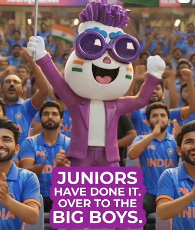
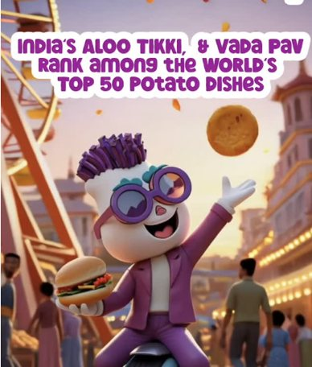
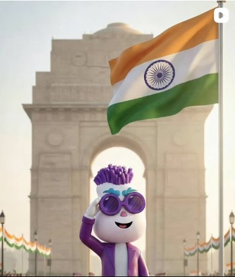
Anticipating the moment
Part of the job was to see the big events coming, such as festivals and matches, and plan content that gave the audience a reason to buy more units of the pack while the mood was high.
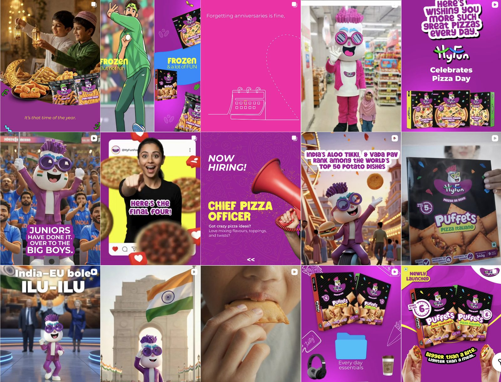
Narrative and identity for an app launch
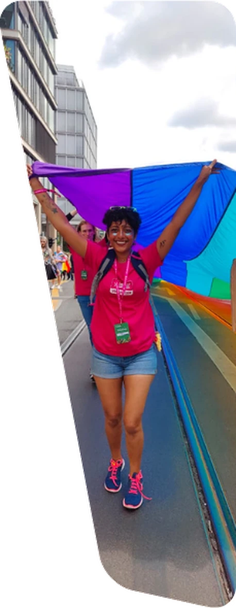
Glii is a queer dating app, and I designed its app screens. Beyond the UX, I led its product communication and brand identity through the launch, from the words on the screens to the five marketing channels that carried it, and then worked on bringing people back.
I came to Glii while exploring my own queer identity, and that shaped the work in three ways. I understood how the community behaves, I had a network to build the brand with, and I had the grounding to lead the sensitization workshops.
I designed the app's screens and led the product communication and UX narrative for the launch, so that what a person read on each screen matched what the brand promised.
- Designed more than 90 user-facing screens across the app.
- Worked on mobile app screen strategy and design, and on web strategy and design.
- Researched accessible and inclusive design, and brought it into the screens.
I designed Glii queer-first, so that the app feels safer for the community it serves. The safety features include:
- Dates booked at neutral locations, restaurants or cafes, directly through the app. Reservation via Zomato was a feature that did not exist in competing apps.
- An integrated SOS button.
- Several parameters for background screening.
- Flagging of irrelevant profiles.
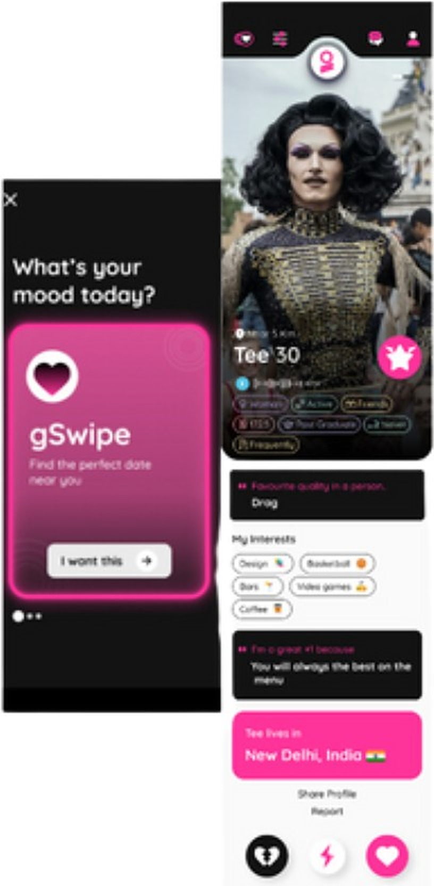
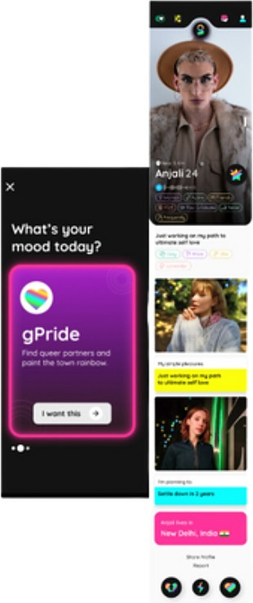
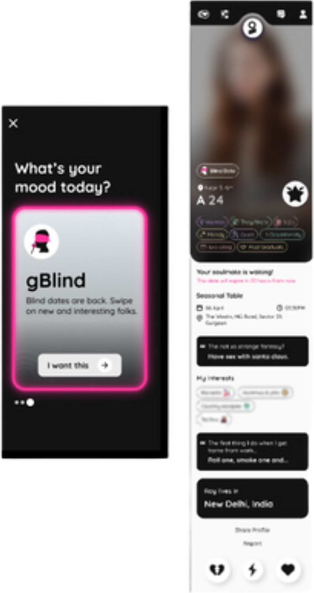
I owned the development of the brand identity and led the launch communication, across the app ecosystem and five marketing channels.
- Brand design, from the identity to the creatives that carried it.
- Brand collaborations that put the app in front of new audiences.
- Communications and strategy for the launch.
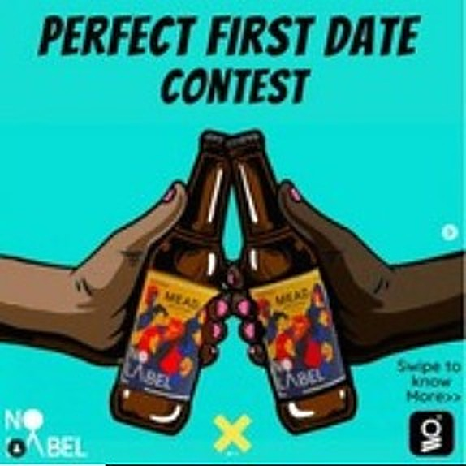
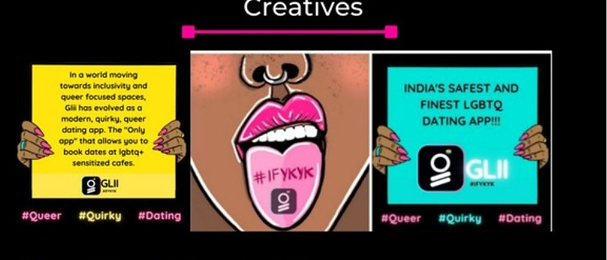
Once the app was out, I drove the strategy for getting people to adopt it and to keep coming back. Repeat engagement rose by 6%.
I led sensitization workshops to strengthen how inclusive the brand was seen to be, and to build engagement with the stakeholders around it.
Retail leadership, from the shop floor to WhatsApp
I was Store Manager at Scotch & Soda from 2019 to 2020 and at Charles & Keith from 2020 to 2022. The two stints overlap, so they share this page.
Scotch & Soda, Palladium Mumbai
2019 — 2020 · Store Manager
- Amsterdam couture apparel
- Celebrity styling
- Visual merchandising
- Inventory management
- Category management
- Merchandising
- Training & development
Through the pandemic
Led assisted-selling and digital adoption initiatives through COVID, driving a 14% increase in daily sales.
National growth
Drove 17% national growth by improving cross-selling and CRM use.
Brand experience
Maintained 96%+ mystery-audit scores, holding the line on brand experience under pressure.
Charles & Keith, India
2020 — 2022 · Store Manager · WhatsApp Business, home shopping
How a home-shopping sale ran
- Send, broadcast message to database
- Enquire location of customer
- Assign to employee in said region
- Employee connects with customer
- Enquire category: bag, shoes, misc
- Use saved replies and brochures
- Yes
- Complete sale, no contact delivery
- No
- Connect again, using refreshed catalogs
What home shopping means
Shopping carried out from one's own home by ordering products shared via WhatsApp. Complete size and fit check is provided with a no contact experience. Perfect for celebrities!
Loyalty
Grew the loyal customer base by 14% through an improved in-store experience.
Stylist partnerships
Led stylist partnerships to scale brand visibility and strengthen PR-led market presence.
Sales growth
Drove strong monthly sales growth, leading to expanded display stock and style approvals.
Monthly average, home shopping
Where hospitality operations met brand experience
I started as an assistant stewardess and grew through the ranks.
I joined Oberoi in 2013, the year I finished my B.Sc. in Hospitality Management at I.H.M. Hyderabad. My time with Oberoi spans a little over six years. It honed my passion for customer service excellence and food & beverage.
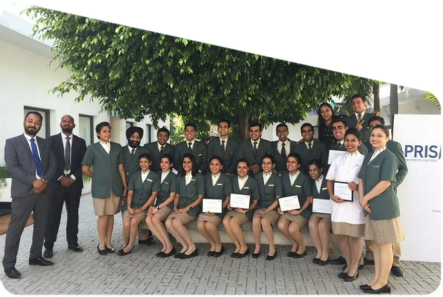
A fully paid scholarship to OCLD
OCLD is the Oberoi Centre of Learning and Development, one of the best hospitality schools. I was awarded an all-paid scholarship there, studied from 2016 to 2018, and I am an alum.
Post Graduate Diploma, O.C.L.D. New Delhi, 2018.
The climb
- 2013 · MumbaiAssistant stewardess
- Udaipur
- Bengaluru, Gurgaon, Hyderabad, Kolkata
- 2019 · MumbaiOperations Manager
Michelin-star kitchens
I served at Ziya, a Michelin-star chef restaurant.
I also hosted special dining events with Michelin-star chefs, enhancing the brand's premium feel and footfall during key seasons.
Along the way
- Oversaw Net Promoter Score
- Guest relations
- Menu engineering and design
- Facilitated people management
- Designed guest experiences
- Organized and managed Wine Summit
- Managed events, social & corporate
It was the stepping stone into the world of branding, public relations and training and development.